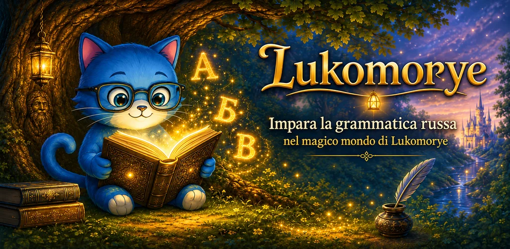

Alfabeto e prime parole
Familiarizza con il cirillico, ascolta la pronuncia registrata e impara parole utili per i tuoi primi passi in russo.
Aiuto, segnalazioni e idee: grammilla.academy@gmail.com
Grammilla è un’app per imparare il russo che riunisce spiegazioni, lessico, audio ed esercizi: dalle prime lettere cirilliche ai casi e ai verbi.
Segui le lezioni guidate ed esplora un mondo di apprendimento ispirato a Lukomorye, alla letteratura e al folclore russo.
Per iPhone, iPad e Android.

Inizia dalle basi o torna su un argomento che vuoi capire meglio. Collega ogni spiegazione agli esempi e alla pratica.
Familiarizza con il cirillico, ascolta la pronuncia registrata e impara parole utili per i tuoi primi passi in russo.
Studia i casi russi, i verbi e la struttura delle frasi con spiegazioni ed esempi. Affronta ogni argomento al tuo ritmo.
Esercitati con quiz e attività sul lessico, ripassa gli argomenti studiati e segui le lezioni completate e i tuoi giorni consecutivi di studio.
Guarda le schermate reali dell’app su iPad e Android. Apri un’immagine per vederla più in dettaglio.

Inizia dall’alfabeto russo e dalla pronuncia, poi approfondisci i casi, i verbi e la struttura delle frasi.
L’app offre interfaccia e spiegazioni in italiano e in inglese, per imparare il russo attraverso una lingua che conosci già.
Queste schermate mostrano l’interfaccia in inglese. Nell’app puoi scegliere anche l’italiano. L’aspetto può variare in base alla versione.


Ecco due argomenti che puoi esplorare in Grammilla: i verbi di movimento senza prefissi e l’aspetto imperfettivo e perfettivo.
идти — ходить · ехать — ездить
Il russo distingue il movimento a piedi da quello con un mezzo di trasporto. Distingue anche il movimento in una sola direzione, in un momento specifico, dagli spostamenti ripetuti o abituali.
A piedi / con un mezzo di trasporto
Я сейчас иду в супермаркет. А ты? (Adesso vado al supermercato. E tu?)
А я сейчас еду на автобусе в центр. (E io adesso vado in centro in autobus.)
Идти / ехать sono monodirezionali; ходить / ездить sono pluridirezionali e possono descrivere un movimento ripetuto o abituale.
Tutti e quattro sono verbi imperfettivi. Questa distinzione è diversa da quella tra aspetto imperfettivo e perfettivo.
НСВ / СВ · processo / risultato
La scelta dell’aspetto dipende dal contesto e da ciò che vuoi esprimere. Confronta due esempi della lezione dell’app sull’infinito:
Imperfettivo — attenzione al processo
Я хочу говорить по-русски. (Voglio parlare russo.)
Perfettivo — attenzione al risultato
Я хочу сказать тебе правду. (Voglio dirti la verità.)
Processo / risultato è un utile punto di partenza, ma non esaurisce la regola. Grammilla affronta anche altri contesti, tra cui i verbi perfettivi con по- per un’azione svolta per un po’ di tempo.
Brevi esempi adattati dalle lezioni di Grammilla sui verbi di movimento e sull’aspetto verbale. Continua nell’app per le spiegazioni complete e gli esercizi.
Sì. Grammilla propone lezioni sui verbi di movimento senza prefissi, tra cui идти / ходить ed ехать / ездить, e sull’aspetto imperfettivo e perfettivo. Guarda gli esempi di questi argomenti.
Sì. L’app offre interfaccia e spiegazioni in italiano e in inglese. Puoi anche read this page in English.
Sì. Puoi iniziare dall’alfabeto russo, dalla pronuncia e dalle prime parole, per poi passare alla grammatica e agli argomenti di lingua pratica.
Sì. Usa le lezioni e gli esercizi per argomento per ripassare le regole, esercitarti con i casi e i verbi russi e consolidare il lessico.
La pratica della grammatica e del lessico può aiutarti nella preparazione al TORFL / TRKI. Affiancala ai requisiti dell’esame e ad altri materiali di studio per il tuo livello.
Puoi iniziare come ospite. Accedi se vuoi sincronizzare i progressi con il tuo account.
Grammilla è disponibile su App Store per iPhone e iPad e su Google Play per Android.